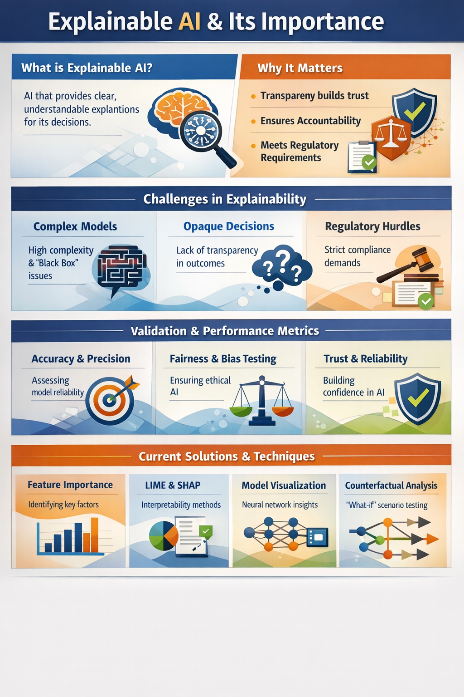

Explainable AI (XAI) and model trust infographic artifact.
Explainable AI (XAI) & Model Trust: Challenges, Validation, and Modern Solutions

The artifact is a clean, presentation-ready infographic that explains Explainable AI (XAI) and its role in improving transparency and trust in modern large language models such as GPT, Claude, Gemini, and LLaMA. It is structured into four clear sections: definition and importance, challenges in explainability, validation and performance metrics, and current industry solutions.
Explainable AI refers to techniques that make AI decision-making processes understandable to humans. As models like GPT, Claude, Gemini, and LLaMA grow in size and complexity, their black-box nature makes it difficult to interpret how outputs are generated. Transparency is critical because it builds user trust, enables accountability, and ensures ethical use of AI in high-stakes domains such as healthcare, finance, and law.
Modern AI systems face several obstacles in achieving transparency. First, model complexity, especially in deep neural networks, makes internal reasoning difficult to interpret. Second, opaque decision-making processes mean outputs cannot always be traced back to specific inputs or reasoning steps. Third, regulatory and compliance requirements vary across regions, making it challenging to standardize explainability practices. These challenges are amplified in foundation models like GPT and Gemini due to their scale and training on vast, diverse datasets.
To ensure reliability and accountability, AI models are evaluated using validation techniques and performance metrics. Common metrics include accuracy, precision, recall, F1-score, and loss functions, which measure how well the model performs on unseen data. Additional validation methods such as bias testing, fairness evaluation, and robustness checks ensure that models behave ethically and consistently. These metrics help quantify trust and allow stakeholders to assess whether a model is suitable for real-world deployment.
Leading organizations are actively improving explainability through various techniques. Methods such as LIME and SHAP help interpret model predictions by identifying feature importance. Counterfactual explanations provide what-if scenarios to understand how outputs change with different inputs. Model visualization tools help researchers analyze neural network behavior, while techniques like RLHF (Reinforcement Learning from Human Feedback) are used by companies like OpenAI and Anthropic to align models with human values. These approaches collectively enhance transparency and trust in AI systems.
The infographic uses structured sections, icons, and visual hierarchy to simplify complex topics and present them in an intuitive, easy-to-understand format.
To clearly communicate the importance of explainable AI in modern machine learning systems while highlighting the challenges, evaluation methods, and solutions that ensure model transparency, reliability, and ethical deployment. The goal is to make complex AI concepts understandable for both technical and non-technical audiences and emphasize the role of trust in AI adoption.
This artifact simplifies a highly technical topic into a structured and visually engaging format, making it easier to understand how and why AI systems make decisions. It highlights the importance of explainability, validation, and performance metrics in building trustworthy AI systems.
Relevance to AI/ML Practice: Understanding explainability is essential for developing responsible AI systems. This artifact demonstrates how transparency, evaluation, and interpretability contribute to safer, more reliable, and ethically aligned AI applications, skills that are critical for modern AI/ML professionals.